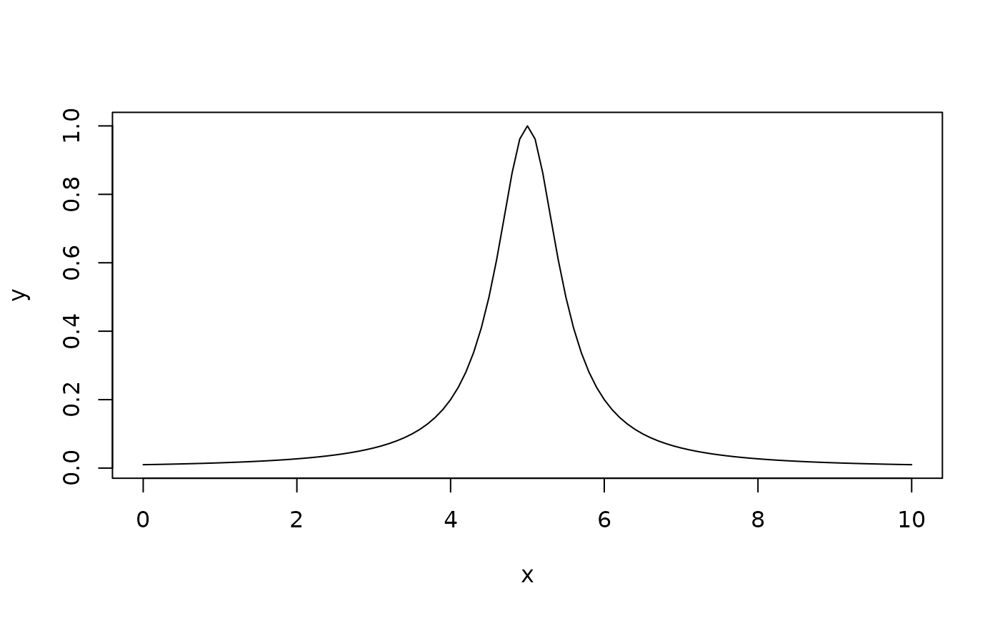

Creates a Lorentzian (Cauchy) peak model with three parameters: height, center, and gamma (half-width at half-maximum).
Details
The Lorentzian function has heavier tails than Gaussian and is commonly used in spectroscopy.
See also
Other peak-models:
bigaussian_peak_model(),
emg_peak_model(),
gaussian_peak_model()
Examples
model <- lorentzian_peak_model()
x <- seq(0, 10, by = 0.1)
params <- list(height = 1, center = 5, gamma = 0.5)
y <- peak_model_value(model, x, params)
plot(x, y, type = "l")
